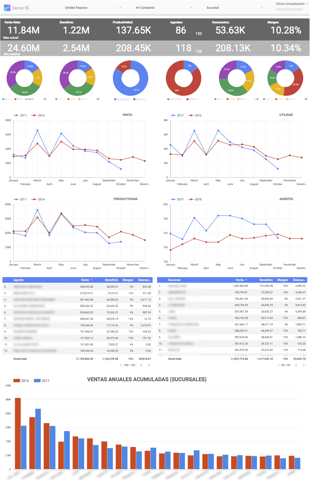
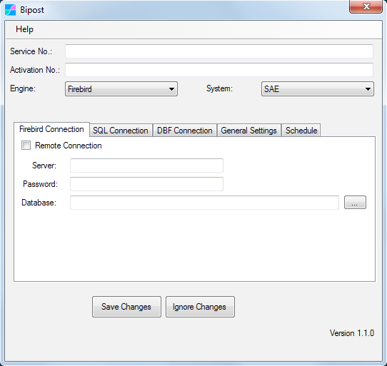

Microsip ERP¶
Microsip es un sistema administrativo ERP que fabrica la empresa Aplicaciones y Proyectos Computacionales S.A. de C.V.
Bipost Sync ofrece una conexión simple a Google Data Studio para crear tus tableros de mando, dashboards e indicadores de gestión.
Casos de Uso¶
Folleto Casos de Uso: Tableros de Mando

Tablas Microsip¶

Al configurar Bipost Sync con System: Microsip, de fábrica se incluye un listado de tablas en la sincronización, las cuales son:
agentes
almacenes
anticipos_cc
articulos
bancos
beneficiarios
cajas
cajeros
centros_costo
ciudades
claves_articulos
clientes
cobradores
comprom_articulos
conceptos_ba
conceptos_cc
conceptos_cp
conceptos_in
condiciones_pago
condiciones_pago_cp
cuentas_bancarias
cuentas_co
depositos_cc
depositos_cc_det
deptos_co
dirs_clientes
doctos_ba
doctos_cc
doctos_cm
doctos_cm_det
doctos_cp
doctos_in
doctos_in_det
doctos_ve
doctos_ve_det
estados
exis_discretos
formas_cobro_cc
formas_cobro_doctos
grupos_lineas
historia_cambiaria
importes_doctos_cc
importes_doctos_cp
impuestos
impuestos_doctos_ve
libres_articulos
libres_cargos_cc
libres_cargos_cp
libres_clientes
libres_com_cm
libres_cot_ve
libres_creditos_cc
libres_creditos_cp
libres_ctas_ban
libres_cuentas_co
libres_devcom_cm
libres_devfac_ve
libres_fac_ve
libres_ped_ve
libres_pol_co
libres_proveedor
lineas_articulos
monedas
paises
plazos_cond_pag
plazos_cond_pag_cp
politicas_comisiones_vendedores
proveedores
roles_claves_articulos
saldos_ba
saldos_cc
saldos_co
saldos_cp
saldos_in
sucursales
tipos_clientes
tipos_impuestos
tipos_polizas
tipos_prov
traspasos_ba
usos_anticipos_cc
vencimientos_cargos_cc
vencimientos_cargos_cm
vencimientos_cargos_cp
vencimientos_cargos_ve
vendedores
vias_embarque
zonas_clientes
En el siguiente link está el listado de tablas de Microsip.
NOTA: La lista del link anterior puede no estar completa.
Para obtener el listado completo de tablas de acuerdo a tu base de datos, puedes usar el siguiente query en Firebird:
select rdb$relation_name
from rdb$relations
where rdb$view_blr is null
and (rdb$system_flag is null or rdb$system_flag = 0)
order by rdb$relation_name;
Añadir tablas a la Sincronización¶
Para incluir tablas adicionales en la sincronización se utiliza el archivo customData.json, ejemplo:
[
{
"active": "true",
"table": "DOCTOS_CO",
"fields": "*",
"join": "",
"filter": "(DOCTOS_CO.ESTATUS = 'P' AND DOCTOS_CO.APLICADO = 'N') OR ((DOCTOS_CO.FECHA BETWEEN DATEADD(-2 day to CAST('Now' as date)) AND CAST('Now' as date)) OR (CAST(DOCTOS_CO.FECHA_HORA_CREACION AS date) BETWEEN DATEADD(-2 day to CAST('Now' as date)) AND CAST('Now' as date)) OR (CAST(DOCTOS_CO.FECHA_HORA_ULT_MODIF AS date) BETWEEN DATEADD(-2 day to CAST('Now' as date)) AND CAST('Now' as date)) OR (CAST(DOCTOS_CO.FECHA_HORA_CANCELACION AS date) BETWEEN DATEADD(-2 day to CAST('Now' as date)) AND CAST('Now' as date)))",
"recursiveDateField": "",
"order": "",
"limit": ""
},
{
"active": "true",
"table": "DOCTOS_CO_CFDI",
"fields": "DOCTOS_CO_CFDI.*",
"join": "DOCTOS_CO ON DOCTOS_CO_CFDI.DOCTO_CO_ID = DOCTOS_CO.DOCTO_CO_ID",
"filter": "(DOCTOS_CO.ESTATUS = 'P' AND DOCTOS_CO.APLICADO = 'N') OR ((DOCTOS_CO.FECHA BETWEEN DATEADD(-2 day to CAST('Now' as date)) AND CAST('Now' as date)) OR (CAST(DOCTOS_CO.FECHA_HORA_CREACION AS date) BETWEEN DATEADD(-2 day to CAST('Now' as date)) AND CAST('Now' as date)) OR (CAST(DOCTOS_CO.FECHA_HORA_ULT_MODIF AS date) BETWEEN DATEADD(-2 day to CAST('Now' as date)) AND CAST('Now' as date)) OR (CAST(DOCTOS_CO.FECHA_HORA_CANCELACION AS date) BETWEEN DATEADD(-2 day to CAST('Now' as date)) AND CAST('Now' as date)))",
"recursiveDateField": "",
"order": "",
"limit": ""
},
{
"active": "true",
"table": "DOCTOS_CO_DET",
"fields": "DOCTOS_CO_DET.*",
"join": "DOCTOS_CO ON DOCTOS_CO_DET.DOCTO_CO_ID = DOCTOS_CO.DOCTO_CO_ID",
"filter": "(DOCTOS_CO.ESTATUS = 'P' AND DOCTOS_CO.APLICADO = 'N') OR ((DOCTOS_CO.FECHA BETWEEN DATEADD(-2 day to CAST('Now' as date)) AND CAST('Now' as date)) OR (CAST(DOCTOS_CO.FECHA_HORA_CREACION AS date) BETWEEN DATEADD(-2 day to CAST('Now' as date)) AND CAST('Now' as date)) OR (CAST(DOCTOS_CO.FECHA_HORA_ULT_MODIF AS date) BETWEEN DATEADD(-2 day to CAST('Now' as date)) AND CAST('Now' as date)) OR (CAST(DOCTOS_CO.FECHA_HORA_CANCELACION AS date) BETWEEN DATEADD(-2 day to CAST('Now' as date)) AND CAST('Now' as date)))",
"recursiveDateField": "",
"order": "",
"limit": ""
},
{
"active": "true",
"table": "DOCTOS_CO_DET_CFDI",
"fields": "DOCTOS_CO_DET_CFDI.*",
"join": "DOCTOS_CO_DET ON DOCTOS_CO_DET_CFDI.DOCTO_CO_DET_ID = DOCTOS_CO_DET.DOCTO_CO_DET_ID JOIN DOCTOS_CO ON DOCTOS_CO_DET.DOCTO_CO_ID = DOCTOS_CO.DOCTO_CO_ID",
"filter": "(DOCTOS_CO.ESTATUS = 'P' AND DOCTOS_CO.APLICADO = 'N') OR ((DOCTOS_CO.FECHA BETWEEN DATEADD(-2 day to CAST('Now' as date)) AND CAST('Now' as date)) OR (CAST(DOCTOS_CO.FECHA_HORA_CREACION AS date) BETWEEN DATEADD(-2 day to CAST('Now' as date)) AND CAST('Now' as date)) OR (CAST(DOCTOS_CO.FECHA_HORA_ULT_MODIF AS date) BETWEEN DATEADD(-2 day to CAST('Now' as date)) AND CAST('Now' as date)) OR (CAST(DOCTOS_CO.FECHA_HORA_CANCELACION AS date) BETWEEN DATEADD(-2 day to CAST('Now' as date)) AND CAST('Now' as date)))",
"recursiveDateField": "",
"order": "",
"limit": ""
},
{
"active": "true",
"table": "DOCTOS_CO_DET_INFO_BAN",
"fields": "DOCTOS_CO_DET_INFO_BAN.*",
"join": "DOCTOS_CO_DET ON DOCTOS_CO_DET_INFO_BAN.DOCTO_CO_DET_ID = DOCTOS_CO_DET.DOCTO_CO_DET_ID JOIN DOCTOS_CO ON DOCTOS_CO_DET.DOCTO_CO_ID = DOCTOS_CO.DOCTO_CO_ID",
"filter": "(DOCTOS_CO.ESTATUS = 'P' AND DOCTOS_CO.APLICADO = 'N') OR ((DOCTOS_CO.FECHA BETWEEN DATEADD(-2 day to CAST('Now' as date)) AND CAST('Now' as date)) OR (CAST(DOCTOS_CO.FECHA_HORA_CREACION AS date) BETWEEN DATEADD(-2 day to CAST('Now' as date)) AND CAST('Now' as date)) OR (CAST(DOCTOS_CO.FECHA_HORA_ULT_MODIF AS date) BETWEEN DATEADD(-2 day to CAST('Now' as date)) AND CAST('Now' as date)) OR (CAST(DOCTOS_CO.FECHA_HORA_CANCELACION AS date) BETWEEN DATEADD(-2 day to CAST('Now' as date)) AND CAST('Now' as date)))",
"recursiveDateField": "",
"order": "",
"limit": ""
},
{
"active": "true",
"table": "SALDOS_CO",
"fields": "*",
"join": "",
"filter": "ANO >= EXTRACT(YEAR from CAST('Now' as date))-1",
"recursiveDateField": "",
"order": "",
"limit": ""
},
{
"active": "true",
"table": "USOS_FOLIOS_FISCALES",
"fields": "USOS_FOLIOS_FISCALES.USO_FOLIO_ID, USOS_FOLIOS_FISCALES.FOLIOS_FISCALES_ID, USOS_FOLIOS_FISCALES.FOLIO, USOS_FOLIOS_FISCALES.FECHA, USOS_FOLIOS_FISCALES.SISTEMA, USOS_FOLIOS_FISCALES.DOCTO_ID, USOS_FOLIOS_FISCALES.PROV_CERT, USOS_FOLIOS_FISCALES.FECHA_HORA_TIMBRADO, USOS_FOLIOS_FISCALES.UUID, USOS_FOLIOS_FISCALES.CFDI_ID ",
"join": "REPOSITORIO_CFDI ON USOS_FOLIOS_FISCALES.CFDI_ID = REPOSITORIO_CFDI.CFDI_ID",
"filter": "REPOSITORIO_CFDI.FECHA BETWEEN DATEADD(-20 day to CAST('Now' as date)) AND CAST('Now' as date)",
"recursiveDateField": "",
"order": "",
"limit": ""
},
{
"active": "true",
"table": "USOS_FOLIOS_FISCALES_CANCELADOS",
"fields": "USO_FOLIO_ID, FECHA_CANCELACION, PROV_CANCELACION, FECHA_HORA_CANCELACION_CFDI ",
"join": "",
"filter": "(FECHA_CANCELACION BETWEEN DATEADD(-20 day to CAST('Now' as date)) AND CAST('Now' as date)) OR (CAST(FECHA_HORA_CANCELACION_CFDI AS date) BETWEEN DATEADD(-20 day to CAST('Now' as date)) AND CAST('Now' as date))",
"recursiveDateField": "",
"order": "",
"limit": ""
},
{
"active": "true",
"table": "DOCTOS_ENTRE_SIS",
"fields": "*",
"join": "",
"filter": "",
"recursiveDateField": "",
"order": "DOCTO_DEST_ID DESC",
"limit": "12500"
}
]
Para más información sobre la configuración de customData.json ver aquí.
Sincroniza de AWS hacia Microsip¶
-
Al usar la sincronización con Download Data es posible traer datos desde AWS Aurora-MySQL hacia tu base de Microsip.
-
Cuando activas la opción Process Data se insertan los datos en Firebird.
-
Usando la opción Final Query puedes correr cualquier stored procedure para que termines de calcular y procesar hacia otras tablas.
Por ejemplo, después que se han recibido e insertado los datos en Firebird, queremos correr el store spFinal así que usamos el parámetro "finalQuery": "execute procedure spFinal;" dentro de outData.json. Aquí ejemplo del contenido de spFinal:
SET TERM ^ ;
RECREATE PROCEDURE SPFINAL
AS
DECLARE VARIABLE id VARCHAR(50);
DECLARE VARIABLE idd VARCHAR(50);
DECLARE VARIABLE tipod VARCHAR(8);
DECLARE VARIABLE docto_id BIGINT;
DECLARE VARIABLE new_docto_id BIGINT;
DECLARE VARIABLE new_doctod_id BIGINT;
DECLARE VARIABLE estatus VARCHAR(1);
DECLARE VARIABLE new_posicion INT;
DECLARE VARIABLE posicion INT;
BEGIN
-- DOCTOS_VE
FOR SELECT id FROM EXPORT_DOCTOS_VE INTO :id
DO
BEGIN
docto_id = NULL;
SELECT ESTATUS FROM EXPORT_DOCTOS_VE WHERE ID = :id INTO :estatus;
SELECT DOCTO_VE_ID FROM DOCTOS_VE WHERE WEBID = :id INTO :docto_id;
IF (docto_id IS NULL) THEN
BEGIN
new_docto_id = GEN_ID(ID_DOCTOS,1);
INSERT INTO DOCTOS_VE(
DOCTO_VE_ID, TIPO_DOCTO, SUBTIPO_DOCTO, FOLIO, FECHA, CLAVE_CLIENTE, CLIENTE_ID, DIR_CLI_ID, DIR_CONSIG_ID, ALMACEN_ID, MONEDA_ID, TIPO_CAMBIO, TIPO_DSCTO, DSCTO_PCTJE, DSCTO_IMPORTE, ESTATUS, APLICADO, FECHA_VIGENCIA_ENTREGA, ORDEN_COMPRA, FECHA_ORDEN_COMPRA, FOLIO_RECIBO_MERCANCIA, FECHA_RECIBO_MERCANCIA, DESCRIPCION, IMPORTE_NETO, FLETES, OTROS_CARGOS, TOTAL_IMPUESTOS, TOTAL_RETENCIONES, TOTAL_ANTICIPOS, PESO_EMBARQUE, FORMA_EMITIDA, CONTABILIZADO, ACREDITAR_CXC, SISTEMA_ORIGEN, COND_PAGO_ID, FECHA_DSCTO_PPAG, PCTJE_DSCTO_PPAG, VENDEDOR_ID, PCTJE_COMIS, VIA_EMBARQUE_ID, IMPORTE_COBRO, IMPUESTO_SUSTITUIDO_ID, IMPUESTO_SUSTITUTO_ID, USUARIO_CREADOR, ES_CFD, ENVIADO, FECHA_HORA_ENVIO, CFD_ENVIO_ESPECIAL, CFDI_CERTIFICADO, FECHA_HORA_CREACION, FECHA_HORA_ULT_MODIF, CARGAR_SUN, FECHA_HORA_CANCELACION, WEBID)
SELECT :new_docto_id, TIPO_DOCTO, SUBTIPO_DOCTO, FOLIO, FECHA, CLAVE_CLIENTE, CLIENTE_ID, DIR_CLI_ID, DIR_CLI_ID, ALMACEN_ID, MONEDA_ID, TIPO_CAMBIO, TIPO_DSCTO, DSCTO_PCTJE, DSCTO_IMPORTE, ESTATUS, APLICADO, FECHA_VIGENCIA_ENTREGA, ORDEN_COMPRA, FECHA_ORDEN_COMPRA, FOLIO_RECIBO_MERCANCIA, FECHA_RECIBO_MERCANCIA, DESCRIPCION, IMPORTE_NETO, FLETES, OTROS_CARGOS, TOTAL_IMPUESTOS, TOTAL_RETENCIONES, TOTAL_ANTICIPOS, PESO_EMBARQUE, FORMA_EMITIDA, CONTABILIZADO, ACREDITAR_CXC, SISTEMA_ORIGEN, COND_PAGO_ID, FECHA_DSCTO_PPAG, PCTJE_DSCTO_PPAG, VENDEDOR_ID, PCTJE_COMIS, VIA_EMBARQUE_ID, IMPORTE_COBRO, IMPUESTO_SUSTITUIDO_ID, IMPUESTO_SUSTITUTO_ID, USUARIO_CREADOR, ES_CFD, ENVIADO, FECHA_HORA_ENVIO, CFD_ENVIO_ESPECIAL, CFDI_CERTIFICADO, FECHA_HORA_CREACION, FECHA_HORA_ULT_MODIF, CARGAR_SUN, FECHA_HORA_CANCELACION, ID
FROM EXPORT_DOCTOS_VE
WHERE ID = :id;
new_posicion = 1;
FOR SELECT id, tipo, posicion FROM EXPORT_DOCTOS_VE_DET WHERE ID = :id INTO :idd, :tipod, :posicion
DO
BEGIN
new_doctod_id = NULL;
new_doctod_id = GEN_ID(ID_DOCTOS,1);
INSERT INTO DOCTOS_VE_DET(
DOCTO_VE_DET_ID, DOCTO_VE_ID, CLAVE_ARTICULO, ARTICULO_ID, UNIDADES, UNIDADES_COMPROM, UNIDADES_SURT_DEV, UNIDADES_A_SURTIR, PRECIO_UNITARIO, PCTJE_DSCTO, DSCTO_ART, PCTJE_DSCTO_CLI, PCTJE_DSCTO_VOL, PCTJE_DSCTO_PROMO, PRECIO_TOTAL_NETO, PCTJE_COMIS, ROL, NOTAS, POSICION)
SELECT :new_doctod_id, :new_docto_id, CLAVE_ARTICULO, ARTICULO_ID, UNIDADES, UNIDADES_COMPROM, UNIDADES_SURT_DEV, UNIDADES_A_SURTIR, PRECIO_UNITARIO, PCTJE_DSCTO, DSCTO_ART, PCTJE_DSCTO_CLI, PCTJE_DSCTO_VOL, PCTJE_DSCTO_PROMO, PRECIO_TOTAL_NETO, PCTJE_COMIS, ROL, NOTAS, :new_posicion
FROM EXPORT_DOCTOS_VE_DET
WHERE ID = :idd
AND tipo = :tipod
AND posicion = :posicion;
new_posicion = new_posicion + 1;
END
END
ELSE
BEGIN
UPDATE DOCTOS_VE SET ESTATUS = :estatus WHERE DOCTO_VE_ID = :docto_id;
END
END
-- DOCTOS_CM
FOR SELECT id FROM EXPORT_DOCTOS_CM INTO :id
DO
BEGIN
docto_id = NULL;
SELECT ESTATUS FROM EXPORT_DOCTOS_CM WHERE ID = :id INTO :estatus;
SELECT DOCTO_CM_ID FROM DOCTOS_CM WHERE WEBID = :id INTO :docto_id;
IF (docto_id IS NULL) THEN
BEGIN
new_docto_id = GEN_ID(ID_DOCTOS,1);
INSERT INTO DOCTOS_CM(
DOCTO_CM_ID, TIPO_DOCTO, SUBTIPO_DOCTO, FOLIO, FECHA, CLAVE_PROV, PROVEEDOR_ID, FOLIO_PROV, FACTURA_DEV, CONSIG_CM_ID, ALMACEN_ID, PEDIMENTO_ID, MONEDA_ID, TIPO_CAMBIO, TIPO_DSCTO, DSCTO_PCTJE, DSCTO_IMPORTE, ESTATUS, APLICADO, FECHA_ENTREGA, DESCRIPCION, IMPORTE_NETO, FLETES, OTROS_CARGOS, TOTAL_IMPUESTOS, TOTAL_RETENCIONES, GASTOS_ADUANALES, OTROS_GASTOS, FORMA_EMITIDA, CONTABILIZADO, ACREDITAR_CXP, SISTEMA_ORIGEN, COND_PAGO_ID, FECHA_DSCTO_PPAG, PCTJE_DSCTO_PPAG, VIA_EMBARQUE_ID, IMPUESTO_SUSTITUIDO_ID, IMPUESTO_SUSTITUTO_ID, CARGAR_SUN, ENVIADO, FECHA_HORA_ENVIO, EMAIL_ENVIO, TIENE_CFD, USUARIO_CREADOR, FECHA_HORA_CREACION, USUARIO_AUT_CREACION, USUARIO_ULT_MODIF, FECHA_HORA_ULT_MODIF, USUARIO_AUT_MODIF, USUARIO_CANCELACION, FECHA_HORA_CANCELACION, USUARIO_AUT_CANCELACION , WEBID)
SELECT :new_docto_id, TIPO_DOCTO, SUBTIPO_DOCTO, FOLIO, FECHA, CLAVE_PROV, PROVEEDOR_ID, FOLIO_PROV, FACTURA_DEV, CONSIG_CM_ID, ALMACEN_ID, PEDIMENTO_ID, MONEDA_ID, TIPO_CAMBIO, TIPO_DSCTO, DSCTO_PCTJE, DSCTO_IMPORTE, ESTATUS, APLICADO, FECHA_ENTREGA, DESCRIPCION, IMPORTE_NETO, FLETES, OTROS_CARGOS, TOTAL_IMPUESTOS, TOTAL_RETENCIONES, GASTOS_ADUANALES, OTROS_GASTOS, FORMA_EMITIDA, CONTABILIZADO, ACREDITAR_CXP, SISTEMA_ORIGEN, COND_PAGO_ID, FECHA_DSCTO_PPAG, PCTJE_DSCTO_PPAG, VIA_EMBARQUE_ID, IMPUESTO_SUSTITUIDO_ID, IMPUESTO_SUSTITUTO_ID, CARGAR_SUN, ENVIADO, FECHA_HORA_ENVIO, EMAIL_ENVIO, TIENE_CFD, USUARIO_CREADOR, FECHA_HORA_CREACION, USUARIO_AUT_CREACION, USUARIO_ULT_MODIF, FECHA_HORA_ULT_MODIF, USUARIO_AUT_MODIF, USUARIO_CANCELACION, FECHA_HORA_CANCELACION, USUARIO_AUT_CANCELACION , ID
FROM EXPORT_DOCTOS_CM
WHERE ID = :id;
new_posicion = 1;
FOR SELECT id, tipo, posicion FROM EXPORT_DOCTOS_CM_DET WHERE ID = :id INTO :idd, :tipod, :posicion
DO
BEGIN
new_doctod_id = NULL;
new_doctod_id = GEN_ID(ID_DOCTOS,1);
INSERT INTO DOCTOS_CM_DET(
DOCTO_CM_DET_ID, DOCTO_CM_ID, CLAVE_ARTICULO, ARTICULO_ID, UNIDADES, UNIDADES_REC_DEV, UNIDADES_A_REC, UMED, CONTENIDO_UMED, PRECIO_UNITARIO, PCTJE_DSCTO, PCTJE_DSCTO_PRO, PCTJE_DSCTO_VOL, PCTJE_DSCTO_PROMO, PRECIO_TOTAL_NETO, PCTJE_ARANCEL, NOTAS, POSICION)
SELECT :new_doctod_id, :new_docto_id, CLAVE_ARTICULO, ARTICULO_ID, UNIDADES, UNIDADES_REC_DEV, UNIDADES_A_REC, UMED, CONTENIDO_UMED, PRECIO_UNITARIO, PCTJE_DSCTO, PCTJE_DSCTO_PRO, PCTJE_DSCTO_VOL, PCTJE_DSCTO_PROMO, PRECIO_TOTAL_NETO, PCTJE_ARANCEL, NOTAS, :new_posicion
FROM EXPORT_DOCTOS_CM_DET
WHERE ID = :idd
AND tipo = :tipod
AND posicion = :posicion;
new_posicion = new_posicion + 1;
END
END
ELSE
BEGIN
UPDATE DOCTOS_CM SET ESTATUS = :estatus WHERE DOCTO_CM_ID = :docto_id;
END
END
-- DOCTOS_IN
FOR SELECT id FROM EXPORT_DOCTOS_IN INTO :id
DO
BEGIN
docto_id = NULL;
SELECT CANCELADO FROM EXPORT_DOCTOS_IN WHERE ID = :id INTO :estatus;
SELECT DOCTO_IN_ID FROM DOCTOS_IN WHERE WEBID = :id INTO :docto_id;
IF (docto_id IS NULL) THEN
BEGIN
new_docto_id = GEN_ID(ID_DOCTOS,1);
INSERT INTO DOCTOS_IN(
DOCTO_IN_ID, ALMACEN_ID, CONCEPTO_IN_ID, FOLIO, NATURALEZA_CONCEPTO, FECHA, ALMACEN_DESTINO_ID, CENTRO_COSTO_ID, CANCELADO, APLICADO, DESCRIPCION, CUENTA_CONCEPTO, FORMA_EMITIDA, CONTABILIZADO, SISTEMA_ORIGEN, USUARIO_CREADOR, FECHA_HORA_CREACION, USUARIO_AUT_CREACION, USUARIO_ULT_MODIF, FECHA_HORA_ULT_MODIF, USUARIO_AUT_MODIF, USUARIO_CANCELACION, FECHA_HORA_CANCELACION, USUARIO_AUT_CANCELACION, WEBID)
SELECT :new_docto_id, ALMACEN_ID, CONCEPTO_IN_ID, FOLIO, NATURALEZA_CONCEPTO, FECHA, ALMACEN_DESTINO_ID, CENTRO_COSTO_ID, CANCELADO, APLICADO, DESCRIPCION, CUENTA_CONCEPTO, FORMA_EMITIDA, CONTABILIZADO, SISTEMA_ORIGEN, USUARIO_CREADOR, FECHA_HORA_CREACION, USUARIO_AUT_CREACION, USUARIO_ULT_MODIF, FECHA_HORA_ULT_MODIF, USUARIO_AUT_MODIF, USUARIO_CANCELACION, FECHA_HORA_CANCELACION, USUARIO_AUT_CANCELACION, ID
FROM EXPORT_DOCTOS_IN
WHERE ID = :id;
new_posicion = 1;
FOR SELECT id, tipo, posicion FROM EXPORT_DOCTOS_IN_DET WHERE ID = :id INTO :idd, :tipod, :posicion
DO
BEGIN
new_doctod_id = NULL;
new_doctod_id = GEN_ID(ID_DOCTOS,1);
INSERT INTO DOCTOS_IN_DET(
DOCTO_IN_DET_ID, DOCTO_IN_ID, ALMACEN_ID, CONCEPTO_IN_ID, CLAVE_ARTICULO, ARTICULO_ID, TIPO_MOVTO, UNIDADES, COSTO_UNITARIO, COSTO_TOTAL, METODO_COSTEO, CANCELADO, APLICADO, COSTEO_PEND, PEDIMENTO_PEND, ROL, FECHA, CENTRO_COSTO_ID)
SELECT :new_doctod_id, :new_docto_id, ALMACEN_ID, CONCEPTO_IN_ID, CLAVE_ARTICULO, ARTICULO_ID, TIPO_MOVTO, UNIDADES, COSTO_UNITARIO, COSTO_TOTAL, METODO_COSTEO, CANCELADO, APLICADO, COSTEO_PEND, PEDIMENTO_PEND, ROL, FECHA, CENTRO_COSTO_ID
FROM EXPORT_DOCTOS_IN_DET
WHERE ID = :idd
AND tipo = :tipod
AND posicion = :posicion;
new_posicion = new_posicion + 1;
END
END
ELSE
BEGIN
UPDATE DOCTOS_IN SET CANCELADO = :estatus WHERE DOCTO_IN_ID = :docto_id;
END
END
SUSPEND;
END^
SET TERM ; ^
Microsip en GitHub¶
Repositorio de GitHub Microsip para crear estructuras del Business Intelligence.
Contacto¶
¿Necesitas ayuda? ¿Buscas una solución a la medida?
Escríbemos! info@factorbi.com